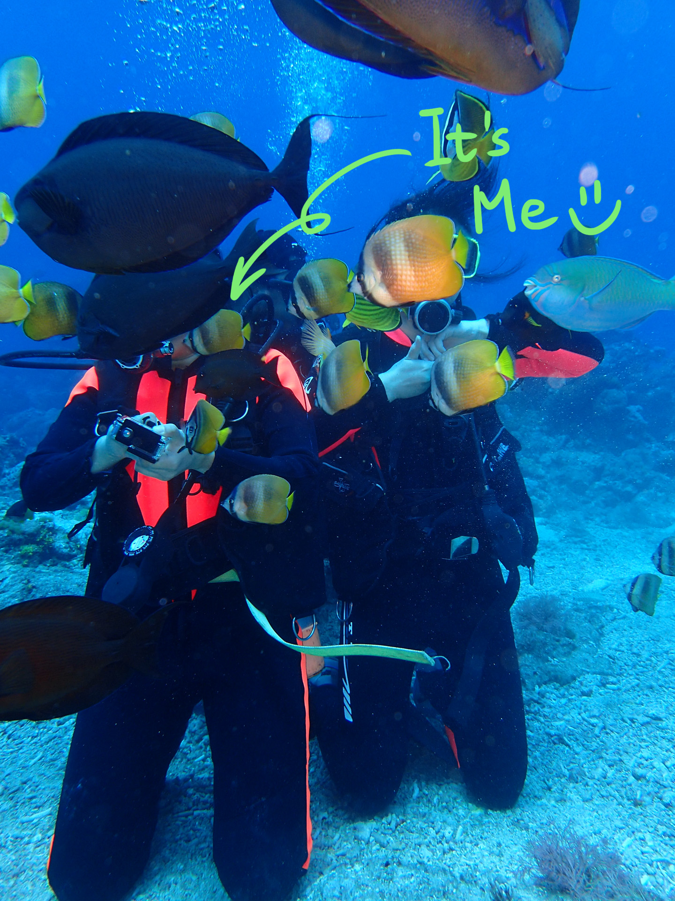

Hello! I am Ziqi Cai, a passionate graphic designer and illustrator originally from Guangzhou, China and currently residing in Ellicott City, Maryland. With a keen eye for detail and a love for telling stories in visual formats, I specialize in transforming ideas into visually elegant and impactful designs. My work spans branding, packaging, illustration, type design, and digital experience.
I am an indoor person who also enjoys outdoor activities, including biking, swimming, and hiking. I once cycled around the Taiwan Island solely for 1,113 kilometers in 12 days.
I believe talent is not just something inborn, but also comes from unceasing efforts and determined goals. I am ready to continue my journey to explore the fascinating world of art and technology.
Please feel free to reach out at dotzcai@gmail.com.
I am an indoor person who also enjoys outdoor activities, including biking, swimming, and hiking. I once cycled around the Taiwan Island solely for 1,113 kilometers in 12 days.
I believe talent is not just something inborn, but also comes from unceasing efforts and determined goals. I am ready to continue my journey to explore the fascinating world of art and technology.
Please feel free to reach out at dotzcai@gmail.com.
